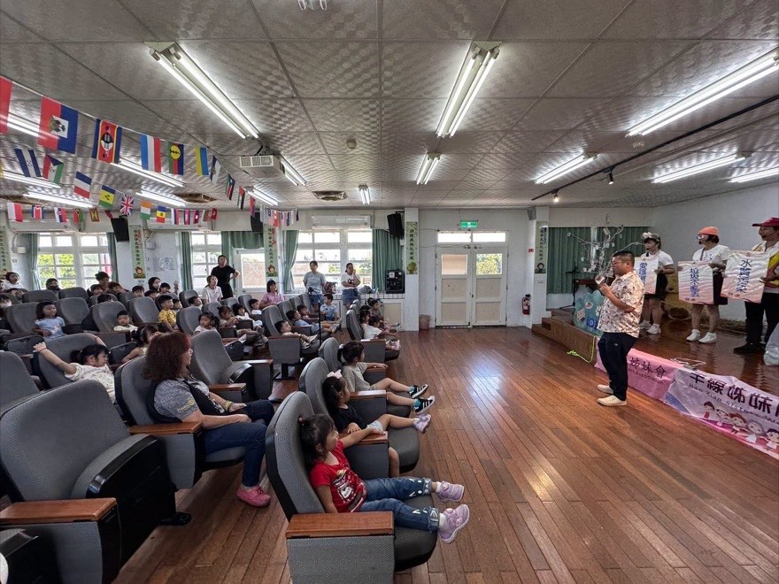
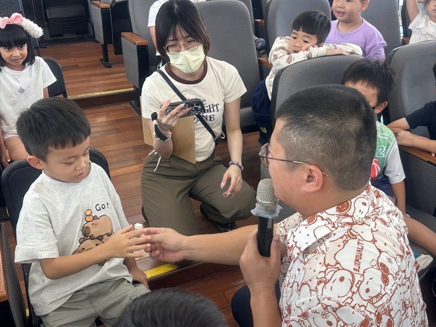
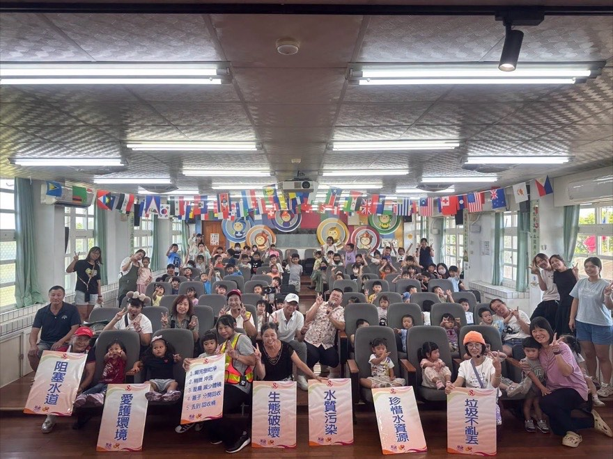

A Play That Protects the Water戲劇走進校園 — 環境教育演出，一起為環境努力



Big ideas, told as a story 把大道理，變成孩子聽得懂的故事
Learning came to life on the stage. A visiting drama group brought an environmental education play to the Guangxing auditorium, and turned big ideas into a story the children could follow.
Through the play, students saw how litter blocks our waterways, how pollution damages water quality, and how a broken ecosystem touches every living thing. The actors also walked everyone through the five simple steps for recycling a drink carton: finish it, rinse it, flatten it, take the cap off, and drop it in the right bin.
Environmental education is not only about knowing the facts. It is about being willing to start with yourself — to treasure resources and care for the place where we all live.
Our thanks go to Director Wu of the Guangxing Non-profit Kindergarten, who applied for the program and opened the door for kindergarten and elementary students to learn side by side.
One play, one lesson, and one more step toward a warmer, greener Guangxing.
透過戲劇，讓學習走進孩子的生活，也讓環境教育變得更生動、有趣。精彩的戲劇演出把環境教育融入其中，讓孩子們透過故事，學習正確的環境保護知識。
演出中，孩子看見垃圾如何阻塞水道、污染如何影響水質，以及生態破壞會牽動每一個生命。演員也帶著大家複習回收飲料盒的五個步驟：喝完倒乾淨、稍微沖洗、壓扁減少體積、蓋子分開回收、丟到回收桶。
我們相信，環境教育不只是認識環境，更重要的是讓孩子願意從自己做起，學會珍惜資源、愛護環境，為我們共同生活的校園與家園盡一份心力。
感謝巫淑茉園長的申請，讓幼兒園與國小之間有更多交流與合作的機會。一場戲劇、一份學習，很開心能與廣興非營利幼兒園一起「共好」，陪伴孩子從小建立愛護環境的觀念。
共好，不只是一起努力，更是一起讓孩子的學習與生活變得更美好。
Tap 🔊 to listen
點喇叭聽發音
A short drama can teach a big lesson.一齣短短的戲劇能教會我們大道理。
The actors stood on the stage with their signs.演員舉著標語站在舞台上。
The actors asked the children questions.演員們向孩子提問。
The whole audience raised their hands.全場觀眾都舉起手來。
Water pollution hurts fish and plants.水污染會傷害魚和植物。
Please do not drop litter on the ground.請不要把垃圾丟在地上。
Trash can block a drain after heavy rain.大雨過後，垃圾會堵住排水溝。
The kindergarten children watched the play with us.幼兒園的小朋友和我們一起看戲。
Match the word to its meaning
把英文和中文配對
Matched 配對成功：0 / 8